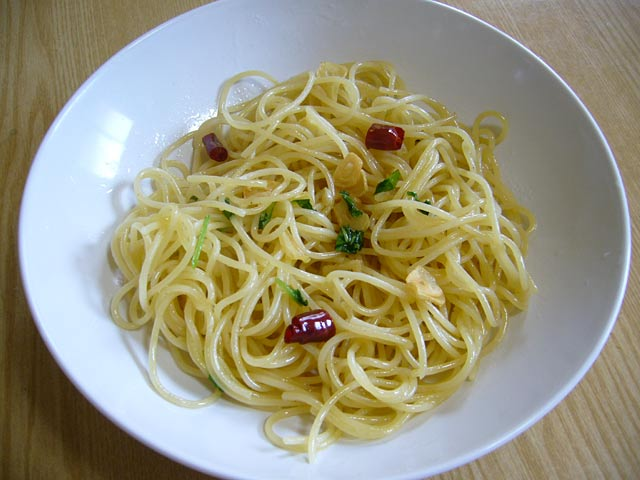

Aglio Olio

Picture taken from https://commons.wikimedia.org/wiki/File:Spaghetti_agll%27_aglio,_olio_e_peperoncino_by_kawanet.jpg
A recipe to make aglio olio at home.
Ingredients
- 1 pound uncooked spaghetti
- ½ cup olive oil
- 6 cloves garlic, thinly sliced
- ¼ teaspoon red pepper flakes, or to taste
- Salt and freshly ground black pepper to taste
- ¼ cup chopped fresh Italian parsley
- 1 cup finely grated Parmigiano-Reggiano cheese
Recipe
- Bring a large pot of lightly salted water to a boil. Cook spaghetti in the boiling water, stirring occasionally until cooked through but firm to the bite, about 10 to 12 minutes. Drain and transfer to a pasta bowl.
- While the pasta is cooking, combine olive oil and garlic in a cold skillet.
- Cook over medium heat to slowly toast garlic, about 10 minutes. Reduce heat to medium-low when olive oil begins to bubble. Cook and stir until garlic is golden brown, about another 5 minutes. Remove from heat.
- Stir red pepper flakes, salt, and black pepper into pasta.
- Pour in hot olive oil and garlic, and sprinkle on Italian parsley and half of the Parmigiano-Reggiano cheese; toss until combined.
- Serve pasta topped with the remaining Parmigiano-Reggiano cheese.
Home